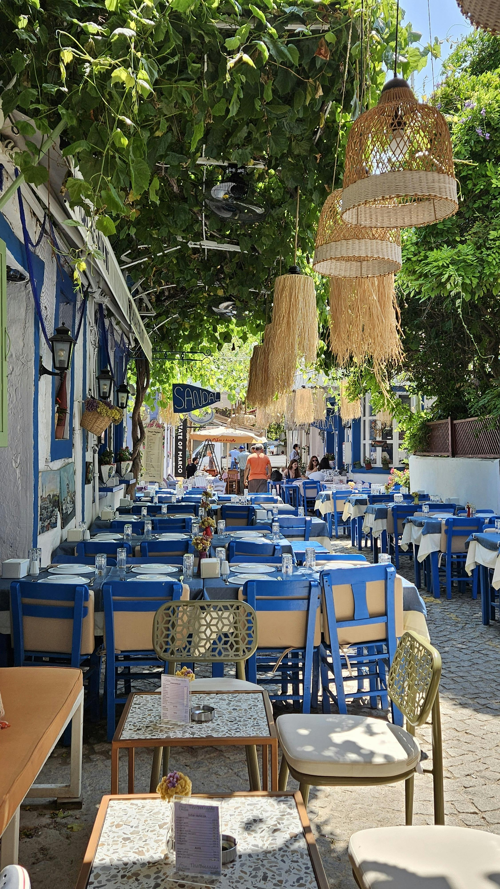
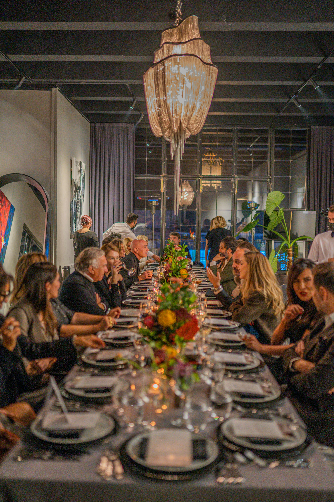

Über uns
Das Restaurant Hellas Tzatziki ist ein Familienbetrieb im Zentrum von Zürich. Seit 1999 bieten wir Ihnen original griechische Küche aus der Ägäis. Alle unsere Gerichte werden täglich mit den frischesten Zutaten zubereitet - ein wahrer Genuss für Auge und Gaumen!
Wir legen großen Wert auf die Qualität unserer Zutaten und
verwenden ausschließlich die besten Produkte aus der Region und aus Griechenland. Lassen Sie sich von uns verwöhnen und genießen Sie ein Stück Griechenland im Stadtzentrum von Zürich.

